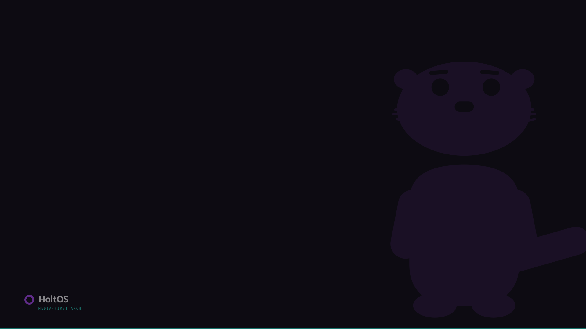
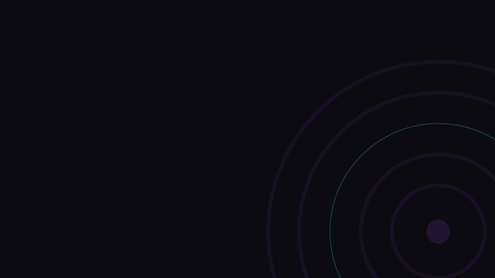
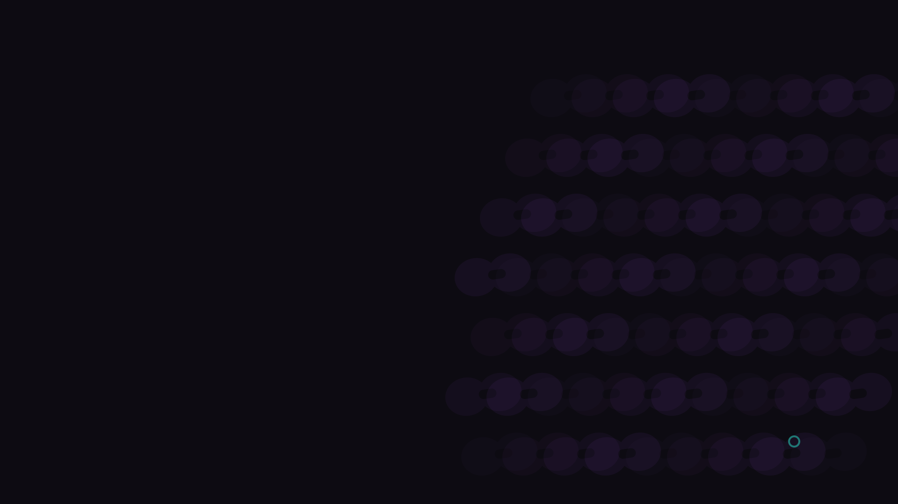

A · corner otter

Full-body otter bleeding off the right edge at 8% — the top-left quadrant stays clear for desktop icons. Lockup sits low-left, teal hairline along the bottom picks up the panel.
B · pool rings

RingMark's geometry blown up and anchored off the bottom-right corner. One teal ring, everything else purple at 7% — abstract enough for a work machine.
C · cheek field

The cheek-pads-and-nose primitive tiled on a drifting diagonal, 2–6% opacity. Reads as texture, not mascot; scales to any resolution without re-drawing.